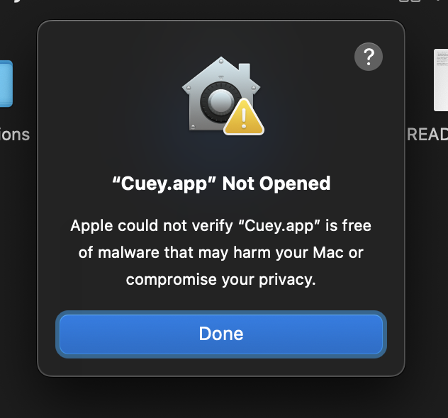
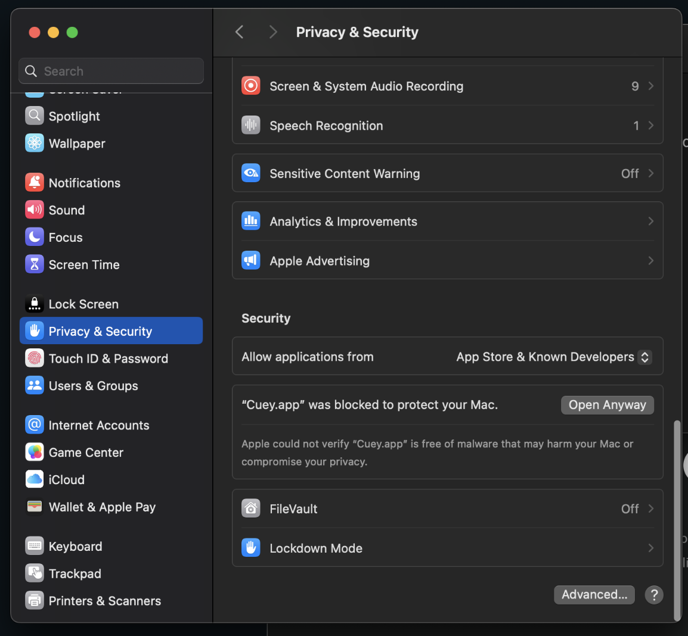
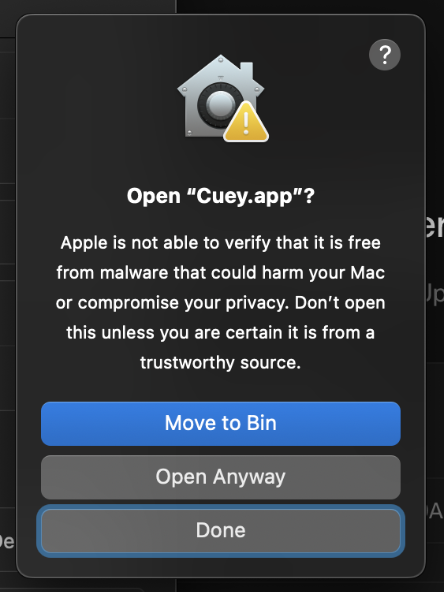

DOPENOTCH AI FOR MACOS · VERSION 0.4.1 (UNIVERSAL 2)
Install DopeNotch AI in a few steps.
Keep this guide open while you install. You can read it before downloading, save it offline, or print it.
1. Move DopeNotch AI to Applications
Open the downloaded DopeNotch.dmg disk image. If an older copy of DopeNotch AI is running, quit it first from the menu bar icon. Drag DopeNotch AI.app into your Applications folder.
Always open DopeNotch AI from your Applications folder (/Applications/DopeNotch AI.app), rather than launching it directly from inside the mounted disk image.
2. First open: two safe ways to approve the app
Because this build is not notarized by Apple, double-clicking it the first time may show a macOS prompt saying “DopeNotch AI.app Not Opened — Apple could not verify DopeNotch AI.app is free of malware.”
Method A — Right-click Open from Applications (macOS 13 & 14)
- Open Finder and go to your Applications folder.
- Control-click (or Right-click) on DopeNotch AI.app and choose Open from the context menu.
- If macOS shows a dialog with an Open button, click Open. If macOS only shows Done and Move to Trash (standard on macOS Sequoia 15+), click Done and use Method B below.
Method B — Approve in System Settings → Privacy & Security (macOS 14 & Sequoia 15+)
- When macOS shows the “DopeNotch AI.app Not Opened” alert, click Done (do not click Move to Trash).
- Open System Settings → Privacy & Security and scroll down to the Security section.
- Locate the message stating that “DopeNotch AI.app” was blocked to protect your Mac and click Open Anyway beside it.
- In the confirmation prompt, click Open Anyway (or Open).
- macOS will ask for your administrator Touch ID or login password. Enter it only in the authentic macOS system prompt.
Do not click Move to Trash — simply click Done so macOS registers the launch attempt.

Scroll down to the Security section and click “Open Anyway” next to the blocked notice.

Click “Open Anyway” on the confirmation sheet.

Use Touch ID or your login password to finish this one-time approval.

Note: The example screenshots above show the exact macOS Sequoia dialogs (illustrated with our sister app Cuey). You will see “DopeNotch AI.app” in the same place.
You do not need to turn off Gatekeeper, FileVault, or System Integrity Protection. After this one-time approval, DopeNotch AI will open normally from Applications or Spotlight.
If the warning is different, stop
If macOS says the app will damage your computer, reports detected malware, says the file is damaged or modified, or if the file’s SHA-256 checksum does not match the official release above, do not open it.
Delete the downloaded file immediately and contact dopenotch@xbuilds.online with your macOS version and the exact alert text. Never enter your Mac password into any website, support chat, or email.
Read Apple’s official guidance on safely opening apps on your Mac →
3. Optional permissions on first run
DopeNotch AI runs locally on your Mac and only requests macOS permissions for the features you choose to use:
- Microphone: Required for on-device Whisper speech-to-text voice dictation and ambient meeting notes.
- Accessibility: Required to paste dictated text or clipboard items directly into your active window (
⌘Vautomation) and to snap/tile windows (/left,/right,/max). - Screen Recording: Optional — used only when you invoke the Screenshot Snip tool (
/snip), Screen Text Grabber OCR (/ocr), Color Eyedropper (/color), or AI Screen Vision.
You can review, grant, or revoke any of these permissions at any time inside DopeNotch Dashboard → Preferences or in macOS System Settings → Privacy & Security.
4. Local storage, licensing & updates
Where your data lives: Your workspace files, notes, and stashed assets are stored locally in ~/Documents/DopeNotch, and app settings, local Whisper models, and license state are stored in ~/Library/Application Support/com.dopenotch.ai.
Community Free vs. Pro: DopeNotch AI starts in Community Free mode (up to 25 clipboard history items and 50 local voice dictations per day) with no credit card required. If you purchased a DopeNotch Pro license via Polar.sh, open DopeNotch Dashboard → Preferences → License and paste your license key to unlock unlimited history and dictations.
Updates: New releases are published at dopenotch.xbuilds.online. To update, quit DopeNotch AI, drag the new copy into Applications, and replace the older version.